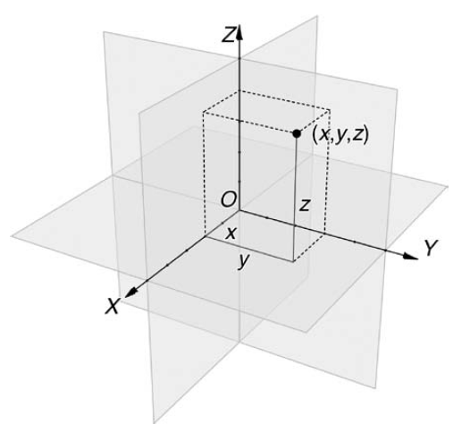

Hoofdstuk 13: 3D transforms
Niet alleen 2D transforms zijn vanaf nu mogelijk, maar ook 3D transforms, dus gebruik makend van een x, yén z-as. Het komt er op neer dat alles wat bij 2D al mogelijk was nu ook over die Z-as kan gebeuren.

perspective
De belangrijkste toevoeging bij 3D transforms is de eigenschap perspective om het perspectief te wijzigen en zo een illusie van diepte op te roepen.
{transform: perspective(depth);}
Je ziet dit perspectief pas in werking in combinatie met rotateX en/of rotateY.
Een voorbeeld:
transform:perspective(200px) rotateY(-50deg);
Een toepassing:
De waarde die je meegeeft als attribuut bij perspective, geeft aan of de kijker dichtbij of veraf van het object staat want het vertelt vanop welk punt van de Z-as je kijkt. Een perspectiefwaarde van 100px wordt als normaal beschouwd, een lage waarde (zoals 50px) geeft aan dat je erg dicht bij het object staat, bij hogere waarden sta je verder weg.
Een github-project dat verder bouwt op de nieuwe mogelijkheden met 3D transforms, is desandro.github.io